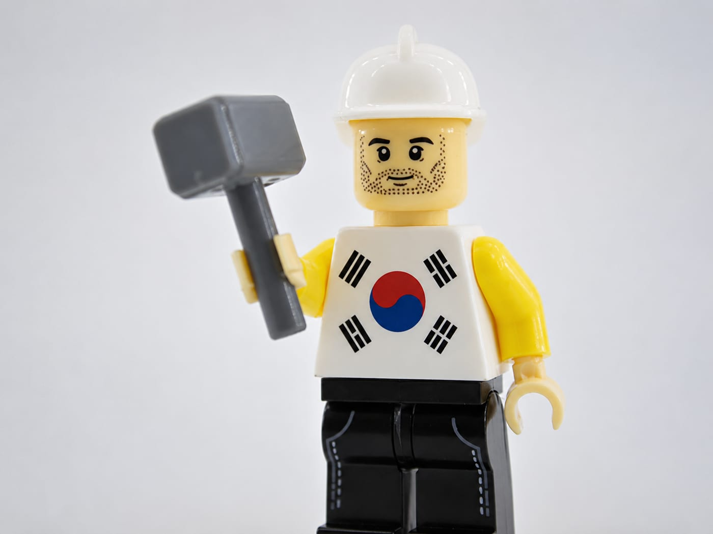
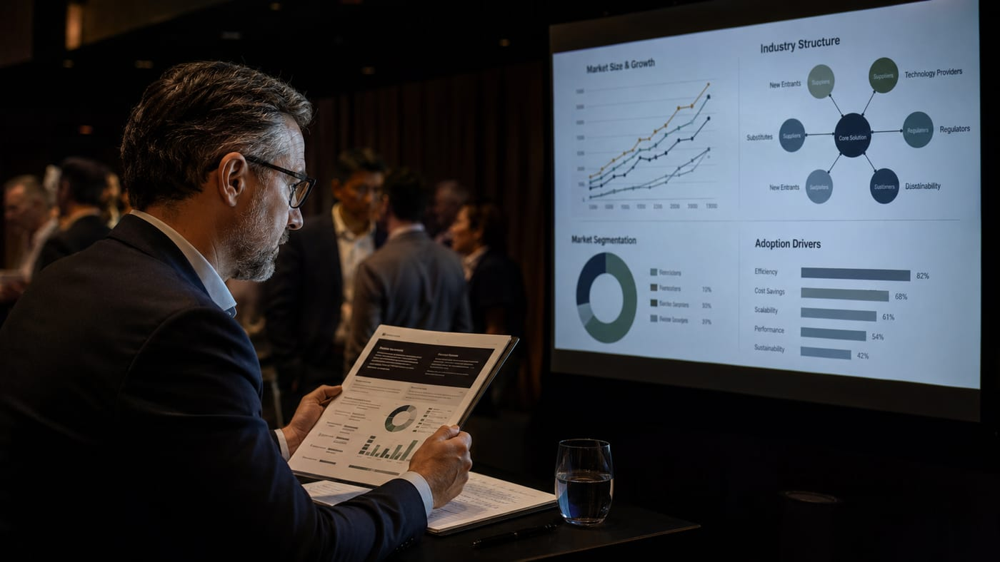
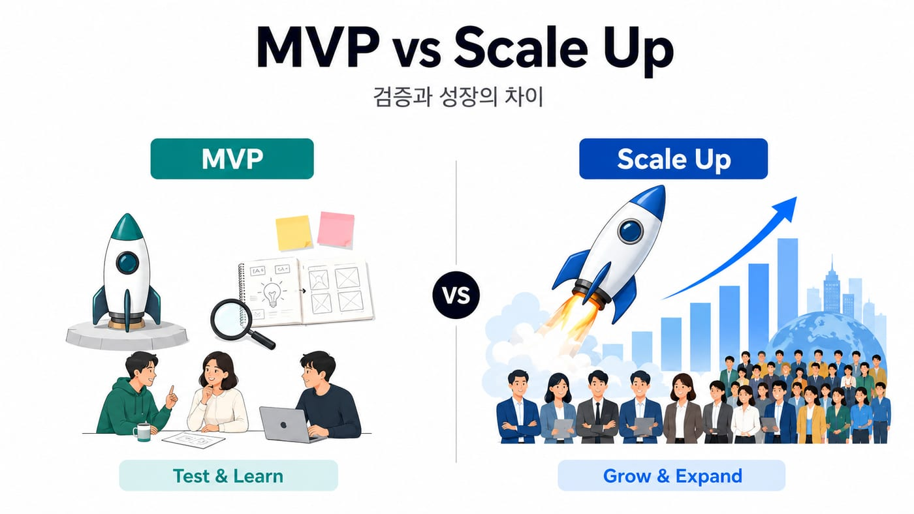
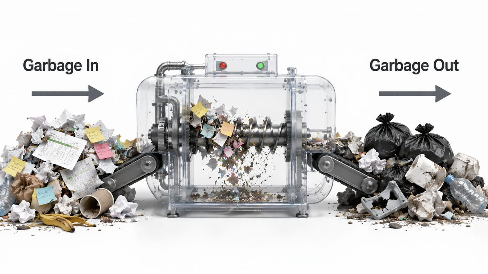
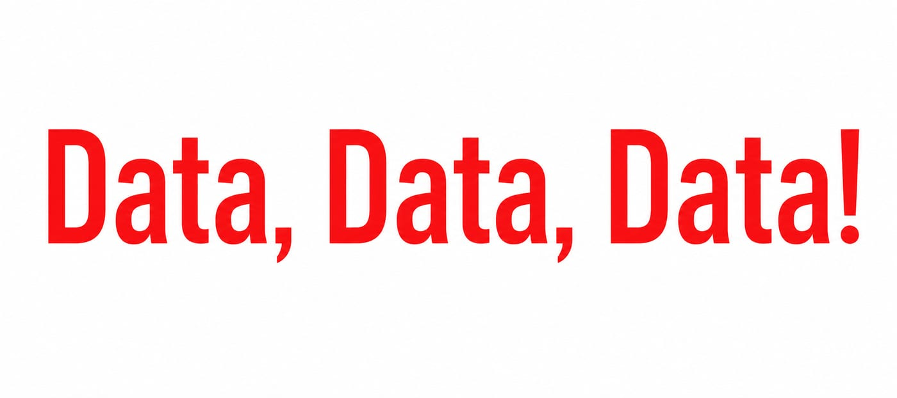
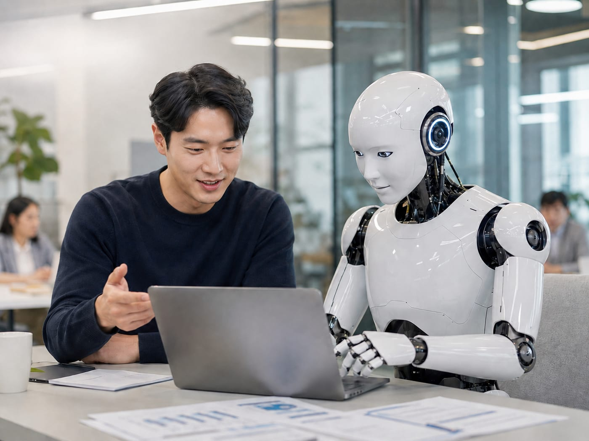
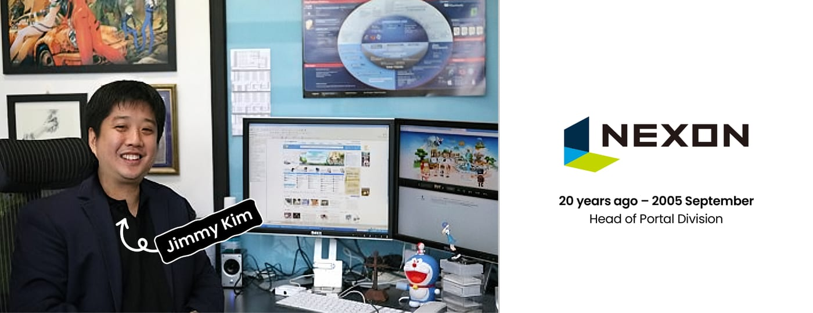
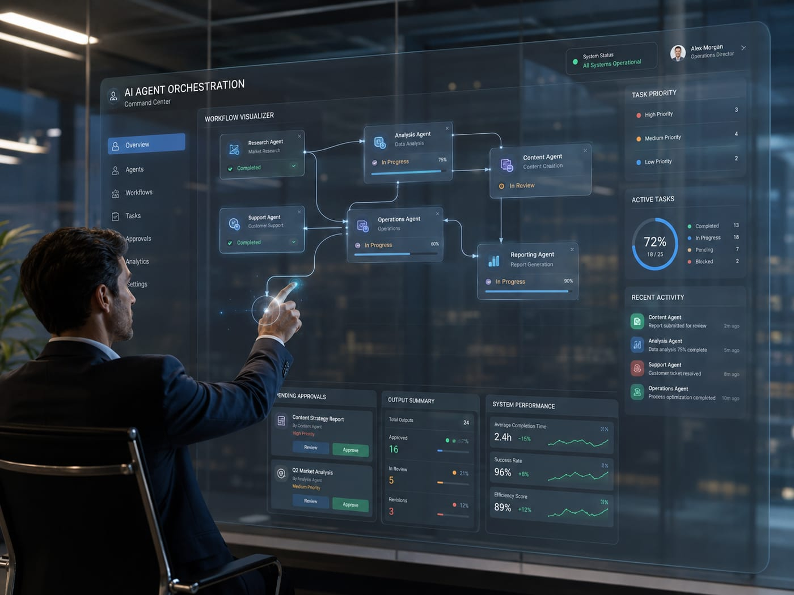
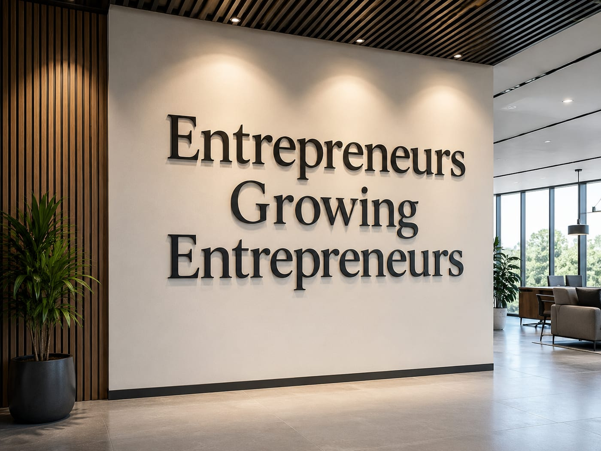

"한국 토종 AI 회사가 없지 않나요?" or "AI 경쟁에서 우리는 이미 늦은 거 아닌가요?"
저는 이 질문에 답하기 전에, 제가 Agentic AI 시대의 경쟁력을 어떻게 보는지 먼저 말씀드리고 싶습니다.
- 산업에 대한 깊은 도메인 전문성 (Industry Domain Expertise)
- 그것을 구현해내는 소프트웨어 아키텍처 역량 (Software Architecture Expertise)
- AI가 신뢰할 수 있게 다룰 수 있는 정형화된 데이터 (Structured Data)
- 이 모든 것을 실제로 작동시키는 AI Agents
이 네 가지가 유기적으로 결합될 때, 비로소 단순한 AI 도구를 넘어 진정한 Vertical AI Company가 완성된다고 생각합니다.
하나씩 짚어보겠습니다.
① Industry Domain Expertise — "어떤 문제를 푸세요?"

SparkLabs에서 첫 만남에 늘 하는 질문입니다. 기술이 바뀌어도 이 질문은 바뀌지 않습니다.
그런데, AI시대의 Domain Expertise는 한 단계 확장됩니다. 저는 이걸 'Dual Domain Expertise'라고 봅니다.
첫째는 Industry Domain Expertise. 제조, 금융, 헬스케어, 물류, 법률, 바이오… 등 특정 산업 안에서 문제를 깊이 이해하는 능력입니다. "진짜 풀어야 할 문제가 무엇인지" 정의해 실제 비용을 만들고, 시간을 낭비하게 하고, 의사결정을 어렵게 하는 근본 문제를 찾아낼 수 있어야 합니다.
두번째는 Software Architecture Expertise. AI 덕분에 MVP 만드는 건 이제 며칠이면 됩니다. 그런데 MVP를 만드는 능력과 회사를 scale하는 능력은 다릅니다.

마치 5층 건물 설계와 100층 건물 설계는 처음부터 다르듯이요. 마찬가지로 데모용 아키텍처 위에 글로벌 SaaS를 올릴 수는 없어요. 처음에 서 있는 것처럼 보이지만, 성장하는 순간 구조적 한계가 드러납니다. AI는 훌륭한 조수이지만, 어떤 구조가 장기적으로 Scalable 한지 판단하는 것은 여전히 전문성이 중요합니다. AI가 MVP의 장벽은 낮췄지만, scale의 장벽까지 없앤 건 아닙니다.
② Structured Data — Garbage in, Garbage out

부동산에서 가장 중요한 세 가지가 Location, Location, Location이라면, 스타트업에서는 Timing, Timing, Timing —

그리고 Agentic AI 시대에는 하나가 더 추가됩니다. Data, Data, Data! 입니다.
많은 사람들이 "Data is the new oil"이라고 말합니다. 저 또한 이 표현이 맞다 생각하지만, 한 단계 더 깊이 봐야한다고 생각합니다. 원유는 땅속에 있다고 가치가 생기지 않습니다.
발견하고, 뽑아내고, 정제하고, 에너지로 전환해야 비로소 가치가 생깁니다.
데이터도 같습니다. 진짜 중요한 질문은 이겁니다.
"그 데이터가 정확합니까?" "최신입니까?" "구조화되어 있습니까?"
부정확하거나 오래된 데이터로 움직이는 AI Agent는 잘못된 결론을 매우 자신 있게 냅니다. AI를 안 쓰는 것보다 더 위험할 수 있어요.
중요한 건, 정확도(Accuracy), 최신성(Up to date), 데이터셋(Structure Dataset) 이 세가지가 모두 갖춰져야 진짜 양질의 데이터라는 점입니다.
AI 시대의 진짜 승자는 데이터를 가장 많이 가진 회사가 아니라, 데이터를 가장 잘 정제하고 구조화해서 AI Agent가 실행 가능한 형태로 만드는 회사입니다.
③ AI Agents — 팀원으로 상정하라

Vertical AI는 단일 model이 아닙니다. AI Agent들의 group입니다.
기획·설계·실행·운영 모든 단계에서 AI를 팀원으로 상정하고 의사결정 루프를 구축하는 것. 이게 1인 창업가가 가능해진 진짜 이유이고, 한국이 AI 시대에 "늦었다"가 아니라 오히려 유리한 자리에 있는 이유입니다.
그래서, 한국이 정말 늦었나요?
이 질문에 답할 수 있습니다.

20년 전 제가 넥슨에서 일하던 시절을 떠올립니다.
우리는 Microsoft, Intel, NVIDIA의 Foundation Layer 위에서 전 세계가 즐기는 게임을 만들었습니다.
메이플스토리 — 던전앤파이터 — 카트라이더.
싸이월드도 마찬가지입니다.
미국의 Facebook보다 먼저 SNS 경험을 만들었고, 카카오톡은 모바일 OS 위에서 한국인의 소통 방식을 바꿨습니다. 웹툰도 같은 패턴입니다.
한국은 늘 Foundation Layer 위에서 세상을 놀라게 하는 application을 만들어왔습니다.
Industry Domain Expertise가 깊었고, Software Architecture로 글로벌 scale을 구현했고, 도메인 데이터를 쌓았고, 그 시대의 Foundation Layer 위에 한국식 application을 빚어냈어요. 이게 30년간 한국이 해온 일이고, 지금 Vertical AI라는 이름으로 다시 반복되고 있는 패턴입니다.
그래서 Next Wave?
역사적으로 회사가 scale하는 데 가장 중요했던 건 HR이었습니다. Salesforce, Workday 같은 multibillion dollar 회사들이 바로 그 영역에서 나왔죠.
저는 Agentic AI 시대의 scale은 다른 곳에서 결정될 거라고 봅니다.

바로 AI Agent를 관리하는 능력 — AiR (AI Resource Management)입니다.
HR이 인적 자원을 관리했듯, AiR가 AI 자원을 관리합니다. Vertical AI 회사들이 늘어날수록 AI Agent도 폭증할 거고, 그 관리 영역에서 다음 Unicorn, Decacorn이 나올 겁니다.
저희 SparkLabs가 주목하고 있는 다음 wave 중 하나입니다.
그래서 스파크랩이 SparkClaw를 만들었습니다

SparkLabs 창립 철학은 "창업가가 창업가를 돕는다"였습니다.
AI 시대에 그 철학은 이렇게 진화했습니다.
Industry를 깊이 아는 사람과 Software Architecture를 깊이 아는 사람이 만나는 community.
Industry 전문가가 자기 산업의 문제를 가져오면 그걸 Architecture로 풀 builder를 만나고, 그 반대도 가능한 곳. 그 안에서 진짜 Vertical AI company가 탄생한다고 믿습니다.
세상을 바꾸는 건 아이디어가 아니라 실행입니다. 저희는 실행으로 증명하는 builder를 찾고 있습니다.
마지막으로 드리는 질문입니다.
여러분이 지금 풀고 계신 문제는 어느 산업의 어떤 Domain Expertise에서 출발합니까?
그리고 그것을 어떤 Software Architecture로 scale하실 건가요?
그 답을 가지고 계신 분이라면 — 혹은 아직 찾고 계신 분이라면 SparkClaw가 그 여정의 시작점이 될 수 있습니다.